렌즈삽입술
검사순서
-
1
문진작성
환자의 체질 및 환경 등
진료에 앞서 다양한
정보를 사실대로 작성 -
2
ARK
각막 곡률, 굴절 이상도
(근시·원시·난시 정도)
동공 크기, 동공 간 거리 검사 -
3
IOP
안구의 압력을 측정
-
4
구안경 도수 검사
현재 사용하는 안경 도수 검사
-
5
시력검사
실제 필요한 정확한 도수 검사
-
6
PENTACAM
각막의 모양과 대칭성,
각막 두께의 측정 -
7
VISANTE
각막 구조 단층 촬영,
각막 두께 측정 -
8
내피세포검사
각막 내피세포의
개수 및 형태 검사 - 9 정밀안압검사
-
10
OPD 스캔 / PERAMIS
시러스 이상 있을 시 검사
*PERAMIS 검사 EYEREUM ONLY -
11
DT 데이토나
망막 주변부 정밀검사
-
12
시러스 OCT
시신경층의 두께를
단층촬영을 통해 정밀 분석 및
연령 평균과 비교 분석 -
13
Matrix
시러스 이상 있을 시 검사 시야
검사를 통해 녹내장 및 시신경
손상 유무 확인 -
14
IOL 마스터
안구의 길이와 렌즈삽입 공간
의 정밀 측정 -
15
CASIA2 (전안부 OCT)
고해상도 전안부 OCT (컴퓨터단층촬영) 검사로 눈 속 3차원 공간 구조
를 360도 촬영해 각막과 홍채형태, 각도를 고차원적으로 분석 -
16
조절마비안약 점안
안구 안에 초점을 이동시키는 수정체의 조절력을 안약을 이용하여
인위적으로 조절마비 후 원래 가지고 있는 굴절이상(근시, 원시)의 정도를
정확하게 검사하는 것(고도근시, 공부하는 학생, 성장기 어린이, 근거리 업무를 많이 하는 직장인
의 경우 시력검사 시 조절 개입이 있을 수 있기 때문에 렌즈삽입 전 반드시
진행해야 하는 필수검사) -
17
검사 결과 안내
검사 결과 상세 설명
-
18
원장 진료
수술 상담 및 망막진료
* 검사종류와 순서는 개인에 따라서 달라질 수 있습니다.
렌즈삽입술 검사내용
- 렌즈삽입술 검사
- 시력검사
- 각막검사
- 망막검사
- 원추각막검사
- 녹내장검사
- 야간 빛 번짐 검사
- 건성안 검사
- 백내장 검사
- 검사 후 상담
-
각막지형도·고위수차 검사
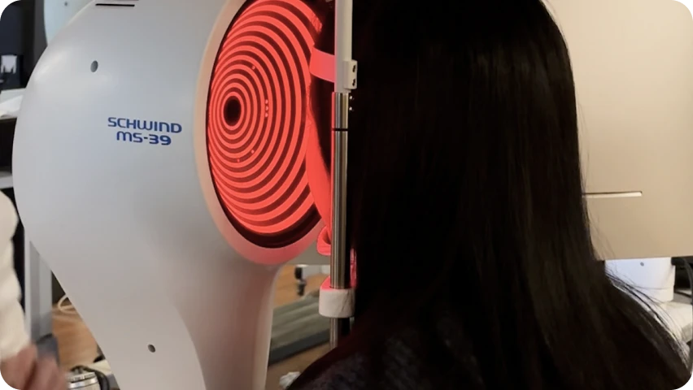
2026. 1월 기준 아이리움에서만 시행하는 PERAMIS, MS-39 검사 장비로 각막지형과 눈 전체의 광학적 특성을 정밀 측정하여 수술 장비에 직접 연동, 초정밀 각막 및 안구 전체의 웨이브프론트(Wavefront) 시력교정술을 실현합니다. -
현성굴절 검사
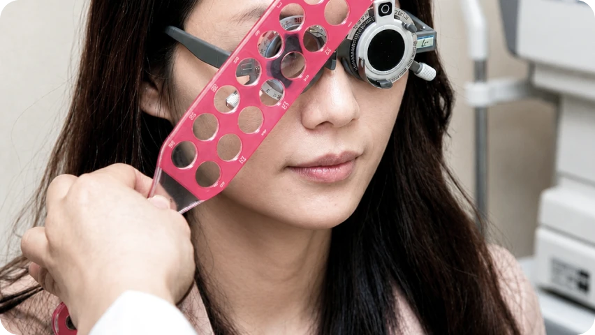
환자의 나안시력과 함께 안경으로 얻을 수 있는 최대 교정시력을 알 수 있습니다. 이 검사를 통해 측정된 최대 교정시력이 이론상으로는 수술 후 나올 수 있는 최대 교정시력입니다. -
조절마비굴절 검사
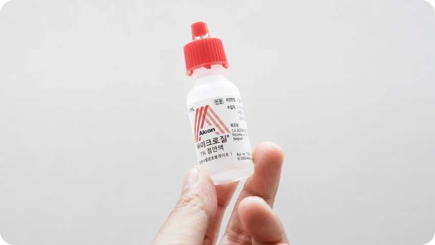
조절마비제라는 안약으로 눈의 조절근육을 일시적으로 마비시켜 가성 근시를 제거하여 눈이 본래 가지고 있는 근시량을 정확히 측정하는 검사입니다. -
부하조절마비굴절 검사
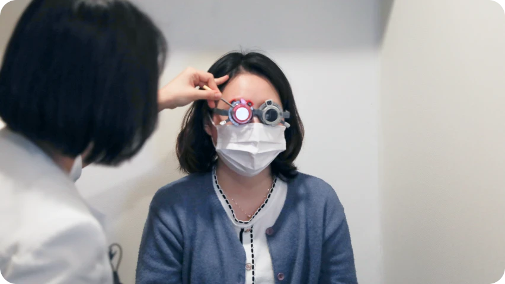
조절마비굴절 검사 3~5일 후 약효가 없어진 다음 시력검사를 실시하여 변화를 측정하여 근시, 난시량을 정밀하게 측정하는 검사입니다. -
자동굴절력 검사
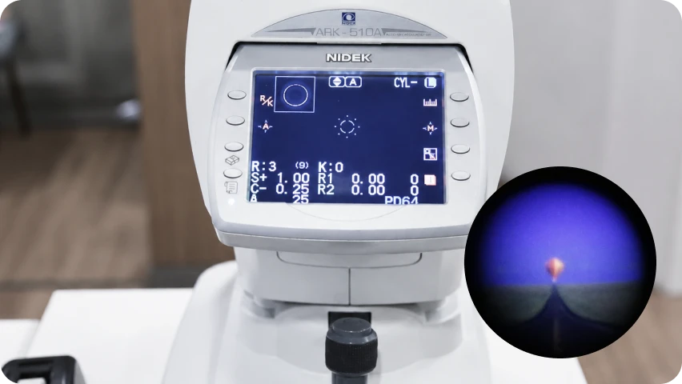
최첨단 광학 장비를 통하여 근시, 난시, 원시와 같은 굴절이상도를 진단합니다. -
각막 MRI 검사
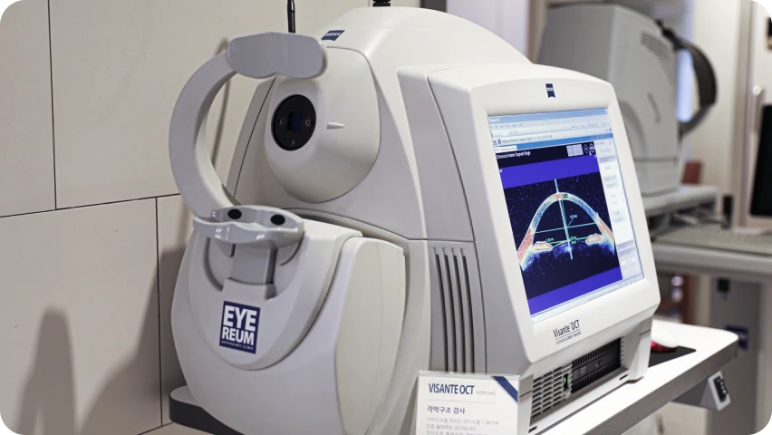
각막 및 홍채, 수정체 등의 상태를 입체적으로 보여주고 각막의 입체적인 지형도까지 정확히 측정 가능한 검사입니다. 수술 전, 후 각막절편의 두께를 미리 시뮬레이션하여 수술 후 부작용을 미리 알 수 있습니다. -
안압 검사
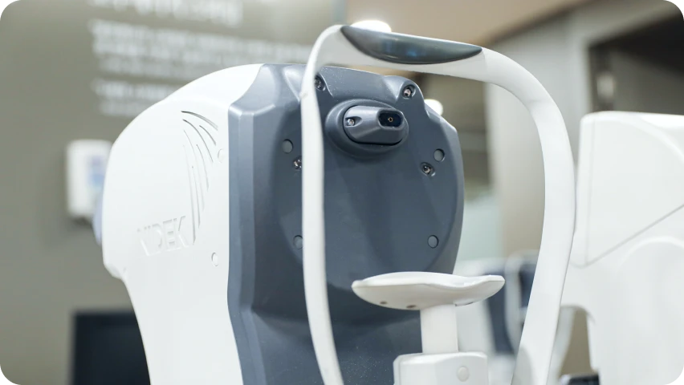
안구에 직접 접촉하지 않고 안압 측정이 가능한 장비로 실명의 치명적인 원인이 되는 녹내장 여부 및 시신경 상태를 파악하여 조기 진단하기 위한 장비입니다. -
A-Scan 검사
 초음파를 이용하여 눈 속의 상태를 검사하는 것입니다. 이를 통해 백내장 수술이나 안내렌즈삽입술에 필요한 안축장 길이, 전방 깊이, 눈 속에 이물질, 망막의 상태 확인 등의 검사를 하게 됩니다.
초음파를 이용하여 눈 속의 상태를 검사하는 것입니다. 이를 통해 백내장 수술이나 안내렌즈삽입술에 필요한 안축장 길이, 전방 깊이, 눈 속에 이물질, 망막의 상태 확인 등의 검사를 하게 됩니다. -
각막내피세포 검사
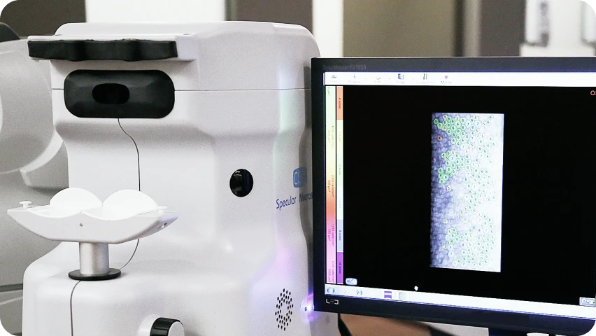
각막의 가장 안쪽 부분에 위치한 단층 세포로 성인에게 약 2,000개 이상이 있으며 각막의 세포는 한번 파괴되면 재생이 안되므로 각막내피세포 검사는 각막의 안쪽에 있는 내피세포를 검사하는 필수 진단 검사입니다. -
ASOCT 검사 (카시아2)
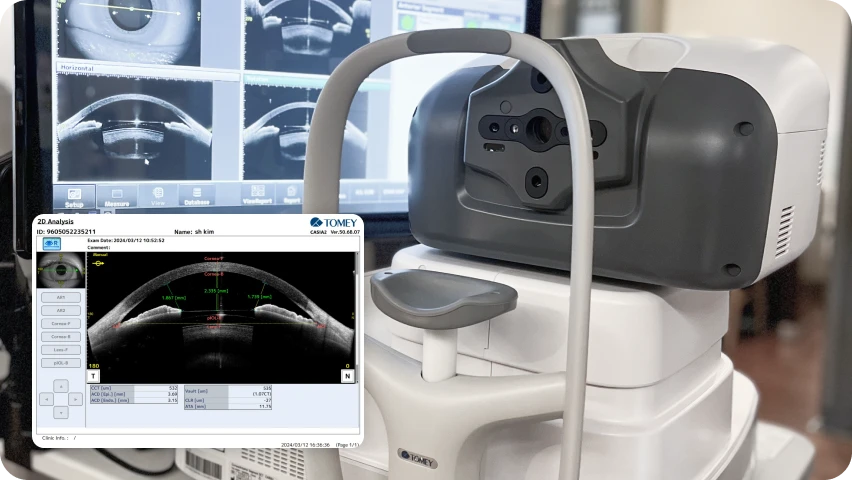
Anterior Segment optical coherence Tomography 고해상도 전안부 CT 검사눈 속 공간 구조를 고화질 360도 촬영하여 각막과 수정체 형태와 각도를 입체적으로 분석, 각막 전면에서 후면까지 약 13mm의 깊이를 정확하게 측정하여 렌즈삽입술 적합성 확인에 필수 검사입니다. -
초음파각막두께 검사
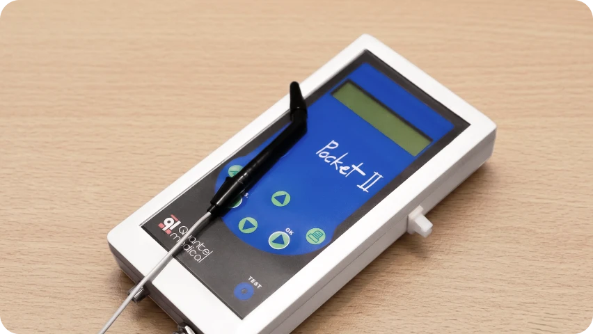
초음파각막두께 검사는 각막의 두께를 검사하는 것으로 잘라내야 할 각막 중심부에 두께를 초음파를 이용하여 측정하는 검사입니다. 특히 고도근시 환자에게 중요한 검사입니다. -
정밀시야 검사 Matrix
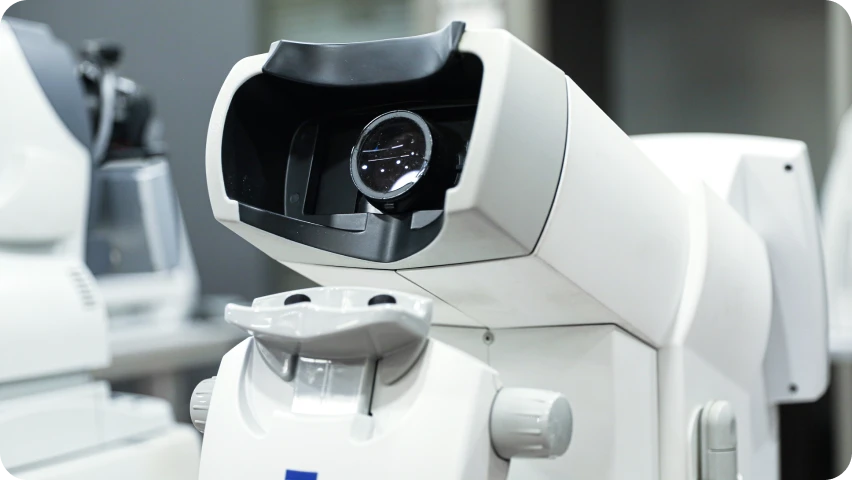
빛에 대한 반응이나 시신경의 이상으로, 녹내장이나 망막 이상이 있는지 진단하고 이를 추적하는 필수검사입니다. -
세극등 검사
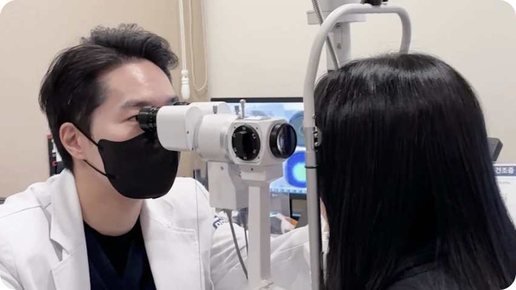
가장 기본적이며 중요한 검사로 원장님께서 직접 현미경을 통해 각막의 모양과 눈의 전반적인 질환 유무를 검사합니다. -
망막 검사
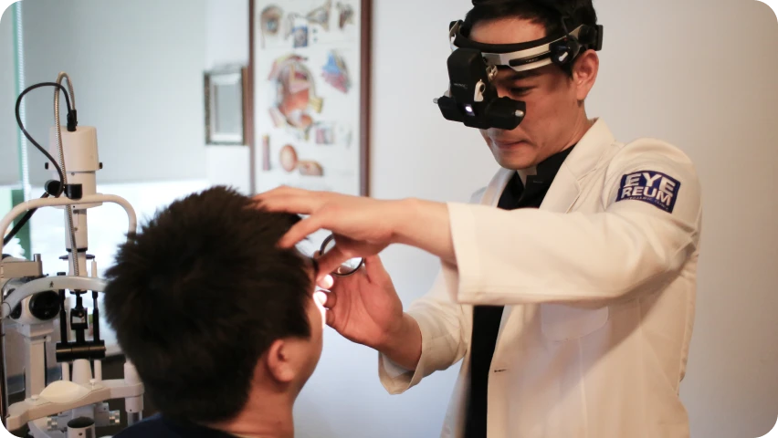
동공 크기를 키운 상태에서 특수 현미경을 통해 눈 뒤쪽에 있는 시신경 부분의 이상 여부에 대해 검사하는 장비로 시신경과 망막 중심부의 이상여부, 녹내장, 외상성 질환, 당뇨, 고혈압, 망막손상, 눈 속 종양 등을 진단하는 장비입니다.
-
검사 전 문진
환자의 과거 병력 및 가족력 등을 파악하고 현재 환자가 불편을 느끼는 자각 증상에 대하여 확인하는 절차입니다. -
안경도수 검사
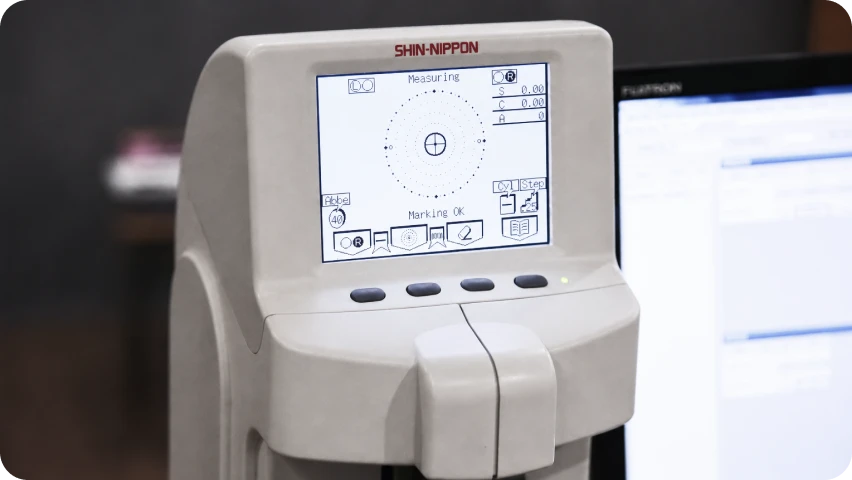
현재 착용 중인 안경도수를 검사하여 안경의 근시, 난시, 원시 도수를 측정할 수 있습니다. -
자동굴절력 검사
최첨단 광학 장비를 통하여 근시, 난시, 원시와 같은 굴절이상도를 진단합니다. -
현성굴절 검사
환자의 나안시력과 함께 안경으로 얻을 수 있는 최대 교정시력을 알 수 있습니다. 이 검사를 통해 측정된 최대 교정시력이 이론상으로는 수술 후 나올 수 있는 최대 교정시력입니다. -
조절마비굴절 검사
조절마비제라는 안약으로 눈의 조절근육을 일시적으로 마비시켜 가성 근시를 제거하여 눈이 본래 가지고 있는 근시량을 정확히 측정하는 검사입니다. -
부하조절마비굴절 검사
조절마비굴절 검사 3~5일 후 약효가 없어진 다음 시력검사를 실시하여 변화를 측정하여 근시, 난시량을 정밀하게 측정하는 검사입니다. -
우세안 검사
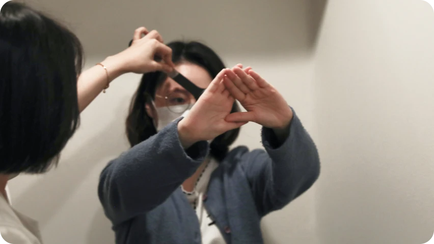
양쪽 눈 중 주로 사용하는 눈을 알아보는 검사입니다.
-
각막강성도 검사
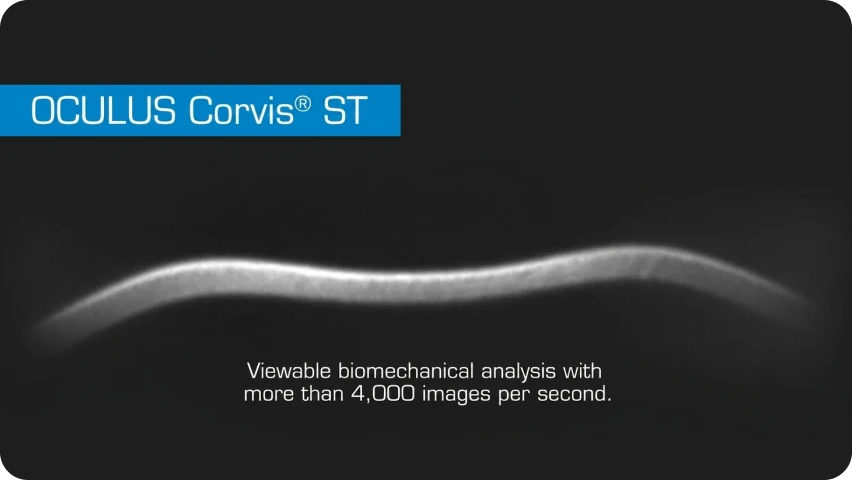
각막의 생체역학적(각막의 강성도 : Stiffness-어떤 압력에 대해 원래 형태를 유지하고자 하는 성질)을 측정하는 검사로 라식, 라섹 수술 후 약해진 각막으로 인한 원주각막 등의 부작용을 예방하기 위해 진행되는 검사이며, 모든 라식, 라섹 환자들에게 수술 전 각막강성도와 수술 후 각막 강성도를 비교하여 보여드리고 있습니다. -
각막지형도·고위수차 검사
2026. 1월 기준 아이리움에서만 시행하는 PERAMIS, MS-39 검사 장비로 각막지형과 눈 전체의 광학적 특성을 정밀 측정하여 수술 장비에 직접 연동, 초정밀 각막 및 만구 전체의 웨이브프론트(Wavefront) 시력교정술을 실현합니다. -
안경도수 검사
현재 착용 중인 안경도수를 검사하여 안경의 근시, 난시, 원시 도수를 측정할 수 있습니다. -
자동굴절력 검사
최첨단 광학 장비를 통하여 근시, 난시, 원시와 같은 굴절이상도를 진단합니다. -
현성굴절 검사
환자의 나안시력과 함께 안경으로 얻을 수 있는 최대 교정시력을 알 수 있습니다. 이 검사를 통해 측정된 최대 교정시력이 이론상으로는 수술 후 나올 수 있는 최대 교정시력입니다. -
조절마비굴절 검사
조절마비제라는 안약으로 눈의 조절근육을 일시적으로 마비시켜 가성 근시를 제거하여 눈이 본래 가지고 있는 근시량을 정확히 측정하는 검사입니다. -
부하조절마비굴절 검사
조절마비굴절 검사 3~5일 후 약효가 없어진 다음 시력검사를 실시하여 변화를 측정하여 근시, 난시량을 정밀하게 측정하는 검사입니다.
-
시신경 및 망막 검사
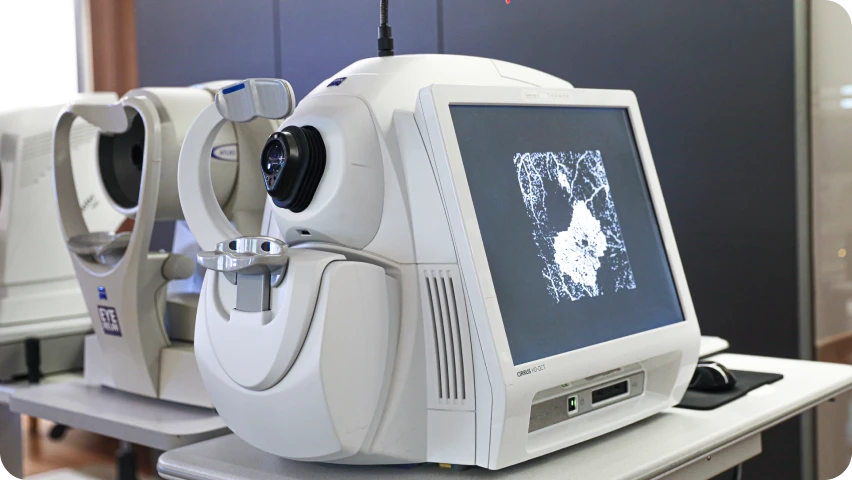
시신경 및 망막 CT촬영을 통한 녹내장 및 망막질환을 진단하여 시신경 및 망막 CT촬영 검사로 망막질환과 녹내장, 시신경 변화 등의 안저질환들을 초기에 잡아냅니다. -
안저 검사
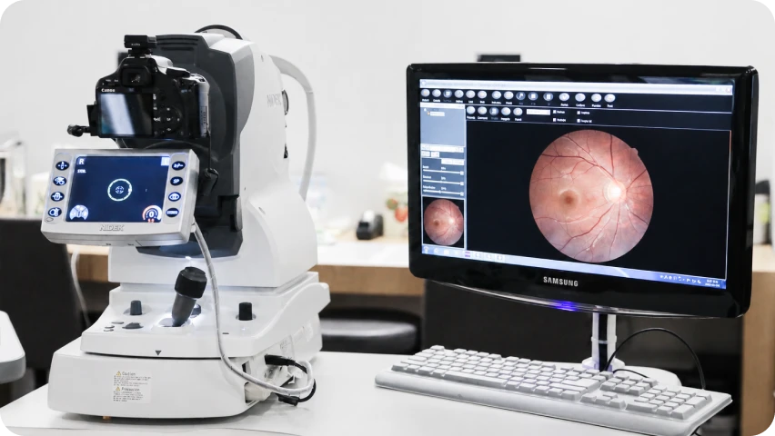
전체적으로 망막과 시신경의 이상여부를 검사하여 망막의 변성, 외상성 질환, 당뇨 및 고혈압으로 인한 망막손상 정도를 진단합니다. -
망막 검사
동공 크기를 키운 상태에서 특수 현미경을 통해 눈 뒤쪽에 있는 시신경 부분의 이상 여부에 대해 검사하는 장비로 시신경과 망막 중심부의 이상여부, 녹내장, 외상성 질환, 당뇨, 고혈압, 망막손상, 눈 속 종양 등을 진단하는 장비입니다.
-
자동굴절력 검사
최첨단 광학 장비를 통하여 근시, 난시, 원시와 같은 굴절이상도를 진단합니다. -
현성굴절 검사
환자의 나안시력과 함께 안경으로 얻을 수 있는 최대 교정시력을 알 수 있습니다. 이 검사를 통해 측정된 최대 교정시력이 이론상으로는 수술 후 나올 수 있는 최대 교정시력입니다. -
각막굴곡도 검사
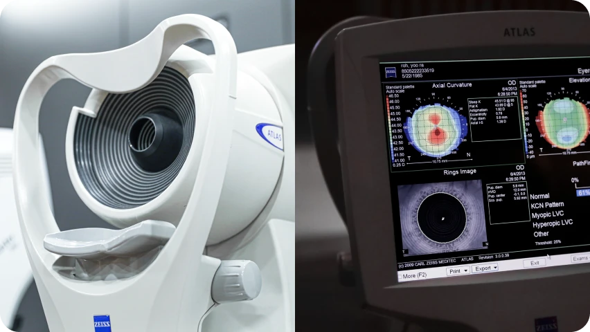
각막의 곡률반경 및 굴절도를 검사하는 것으로 각막의 모형과 편평도, 원추각막, 동공크기 등을 알 수 있습니다. -
각막지형도·고위수차 검사
2026. 1월 기준 아이리움에서만 시행하는 PERAMIS, MS-39 검사 장비로 각막지형과 눈 전체의 광학적 특성을 정밀 측정하여 수술 장비에 직접 연동, 초정밀 각막 및 안구 전체의 웨이브프론트(Wavefront) 시력교정술을 실현합니다. -
각막 MRI 검사
각막 및 홍채, 수정체 등의 상태를 입체적으로 보여주고 각막의 입체적인 지형도까지 정확히 측정 가능한 검사입니다. 수술 전, 후 각막절편의 두께를 미리 시뮬레이션하여 수술 후 부작용을 미리 알 수 있습니다.
-
안압 검사
안구에 직접 접촉하지 않고 안압 측정이 가능한 장비로 실명의 치명적인 원인이 되는 녹내장 여부 및 시신경 상태를 파악하여 조기 진단하기 위한 장비입니다. -
정밀시야 검사 Matrix
빛에 대한 반응이나 시신경의 이상으로, 녹내장이나 망막 이상이 있는지 진단하고 이를 추적하는 필수검사입니다. -
안저 검사
전체적으로 망막과 시신경의 이상여부를 검사하여 망막의 변성, 외상성 질환, 당뇨 및 고혈압으로 인한 망막손상 정도를 진단합니다. -
정밀시야 검사 Humphrey
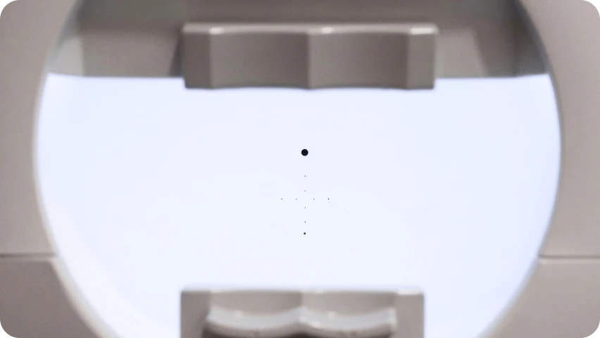
Matrix로 검사 결과가 안 좋은 경우 정밀하게 재검사 시 사용하는 장비로 녹내장이나 망막, 황반부 이상 유무를 파악할 수 있습니다. -
시신경 및 망막 검사
시신경 및 망막 CT촬영을 통한 녹내장 및 망막질환을 진단하여 시신경 및 망막 CT촬영 검사로 망막질환과 녹내장, 시신경 변화 등의 안저질환들을 초기에 잡아냅니다. -
각막 MRI 검사
각막 및 홍채, 수정체 등의 상태를 입체적으로 보여주고 각막의 입체적인 지형도까지 정확히 측정 가능한 검사입니다. 수술 전, 후 각막절편의 두께를 미리 시뮬레이션하여 수술 후 부작용을 미리 알 수 있습니다.
-
야간동공크기 검사
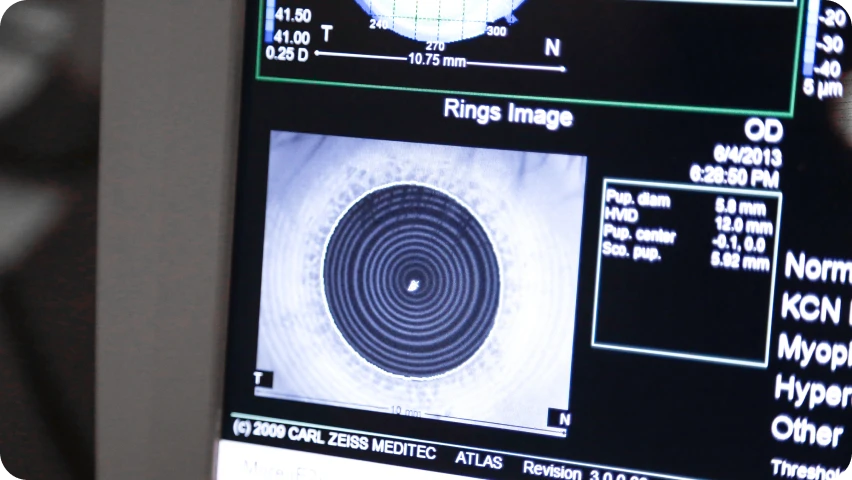
고도근시에서 야간에 동공크기가 큰 경우 야간 빛 번짐이 생길 수 있습니다. 따라서 실제 야간상황에서의 동공크기를 정확히 측정함으로써 수술 후 이런 문제의 가능성을 미리 예측할 수 있습니다. 이 검사로 야간 동공크기를 측정하여 각막절편크기와 레이저 조사범위와 방법을 결정 할 수 있습니다. -
자동동공크기 검사
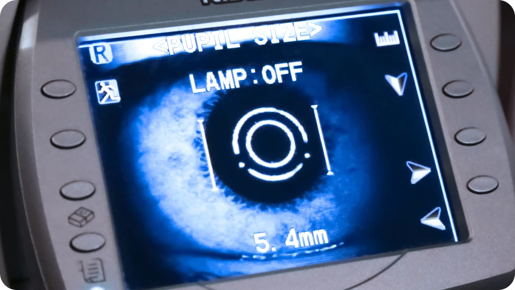
각막의 곡률반경 및 굴절도를 검사하는 것으로 각막의 모형과 편평도, 원추각막, 동공크기 등을 알 수 있습니다. -
웨이브프론트 검사
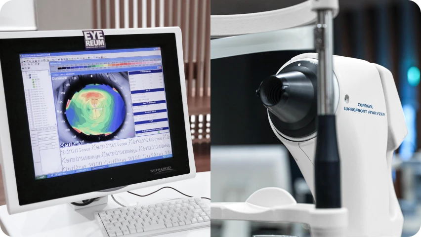
웨이브프론트 수차를 직접 관찰하는 Tscherning방식으로 각막의 전, 후면, 근시, 난시 이외에 미세한 시력 방해 원인인 고위수차 분석을 통해 시력의 질을 높이기 위한 검사입니다. -
자동굴절력 검사
최첨단 광학 장비를 통하여 근시, 난시, 원시와 같은 굴절이상도를 진단합니다.
-
눈물분량 검사
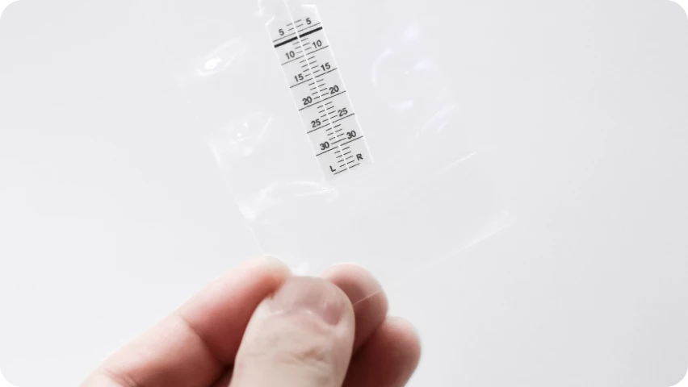
눈물의 분비량을 파악하여 수술 후 일시적으로 심해질 안구건조증에 대한 부작용을 미리 예측할 수 있습니다. -
세극등 검사
가장 기본적이며 중요한 검사로 원장님께서 직접 현미경을 통해 각막의 모양과 눈의 전반적인 질환 유무를 검사합니다. -
눈물막 안정성 검사
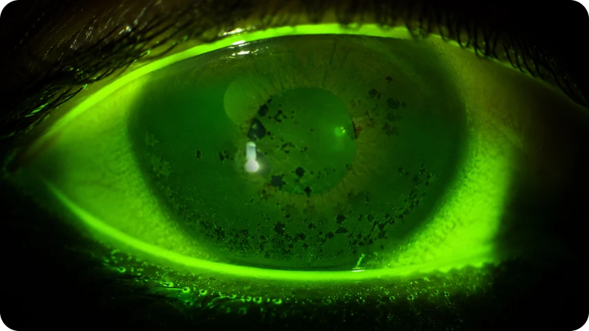
눈에 형광물질을 점안하고 깜빡여 각막표면에 도포시킨 후 형광물질이 마를 때까지의 시간을 측정하여 눈물막의 정상여부를 확인할 수 있습니다.
-
A-Scan 검사
초음파를 이용하여 눈 속의 상태를 검사하는 것입니다. 이를 통해 백내장 수술이나 안내렌즈삽입술에 필요한 안축장 길이, 전방 깊이, 눈 속에 이물질, 망막의 상태 확인 등의 검사를 하게 됩니다. -
현성굴절 검사
환자의 나안시력과 함께 안경으로 얻을 수 있는 최대 교정시력을 알 수 있습니다. 이 검사를 통해 측정된 최대 교정시력이 이론상으로는 수술 후 나올 수 있는 최대 교정시력입니다. -
세극등 검사
가장 기본적이며 중요한 검사로 원장님께서 직접 현미경을 통해 각막의 모양과 눈의 전반적인 질환 유무를 검사합니다. -
자동굴절력 검사
최첨단 광학 장비를 통하여 근시, 난시, 원시와 같은 굴절이상도를 진단합니다. -
안압 검사
안구에 직접 접촉하지 않고 안압 측정이 가능한 장비로 실명의 치명적인 원인이 되는 녹내장 여부 및 시신경 상태를 파악하여 조기 진단하기 위한 장비입니다. -
각막지형도·고위수차 검사
2026. 1월 기준 아이리움에서만 시행하는 PERAMIS, MS-39 검사 장비로 각막지형과 눈 전체의 광학적 특성을 정밀 측정하여 수술 장비에 직접 연동, 초정밀 각막 및 안구 전체의 웨이브프론트(Wavefront) 시력교정술을 실현합니다. -
안저 검사
전체적으로 망막과 시신경의 이상여부를 검사하여 망막의 변성, 외상성 질환, 당뇨 및 고혈압으로 인한 망막손상 정도를 진단합니다.
-
결과분석 및 상담
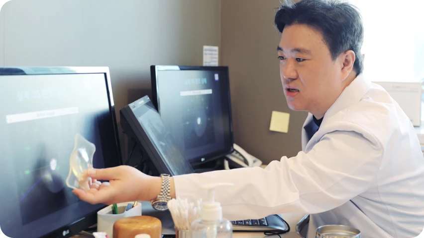
정밀한 안검사 결과를 통해 현재의 정확한 눈 상태를 파악할 수 있으며 이 결과를 바탕으로 다양한 수술종류 중 가장 적합한 수술법을 결정할 수 있습니다. 상담을 통해 수술방법, 회복 기간, 수술 전/후 주의사항 등 전반적 내용을 안내 드립니다. -
맞춤별 수술상담
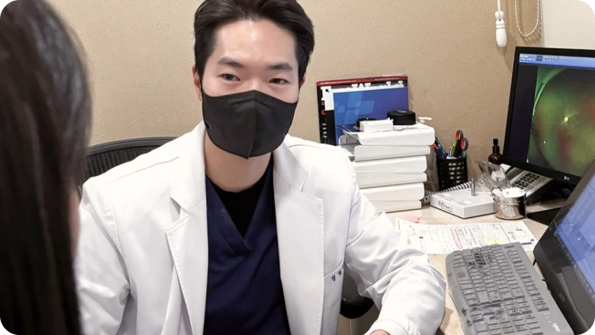
정밀한 안검사 및 상담 후 최종적으로 원장님과의 수술 상담을 진행합니다. 전반적 검사결과에 대한 진단 및 진료와 최종적 수술방법 선택에 대한 상담이 이루어집니다.